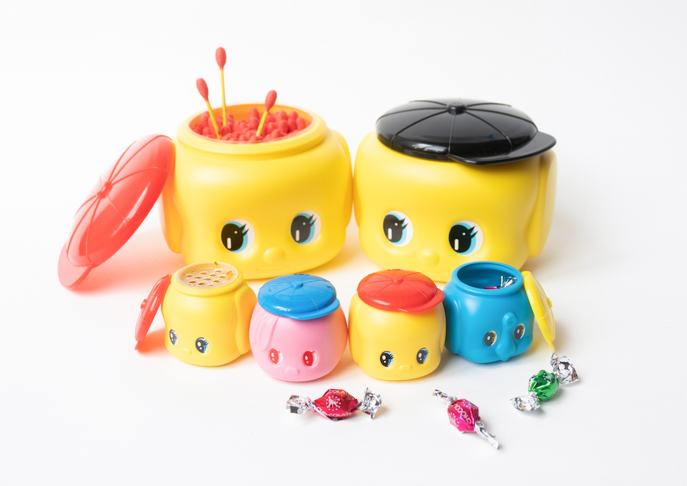
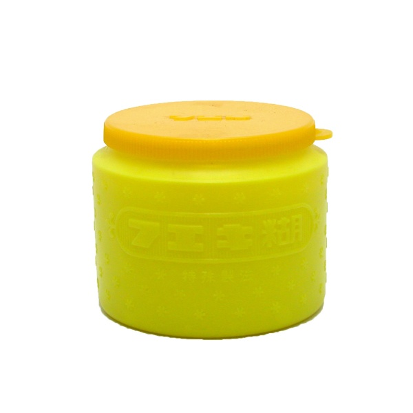
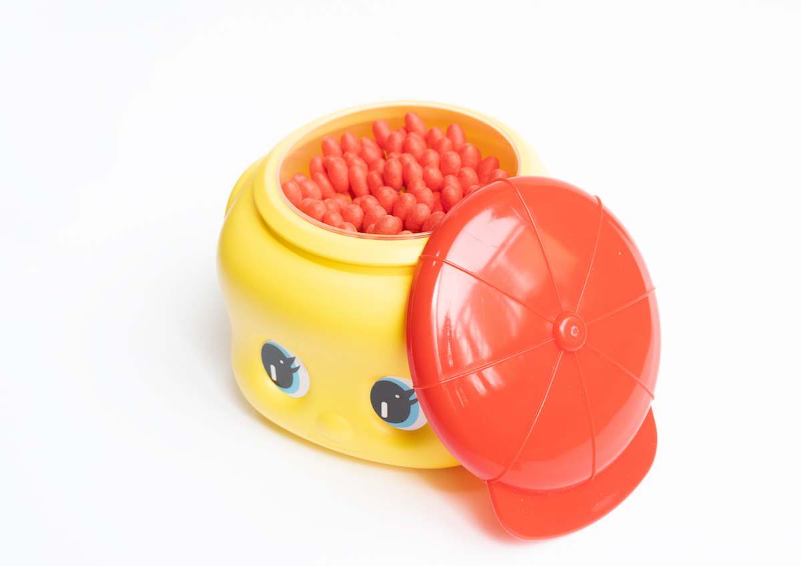
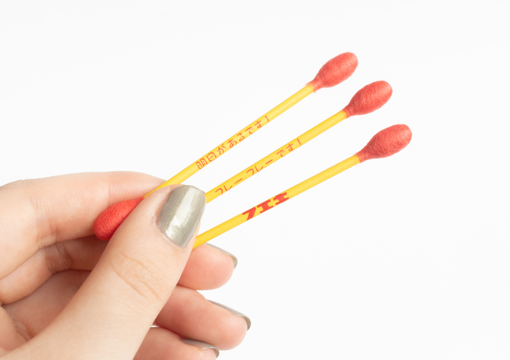
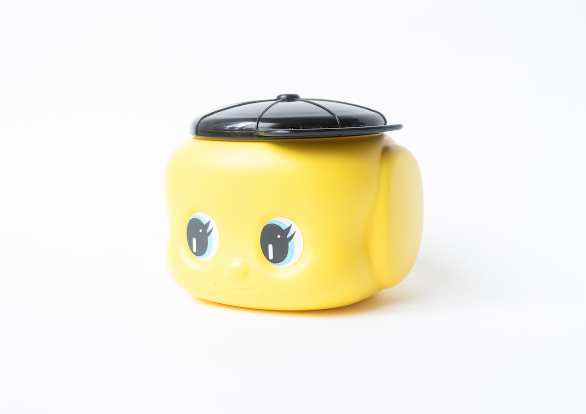
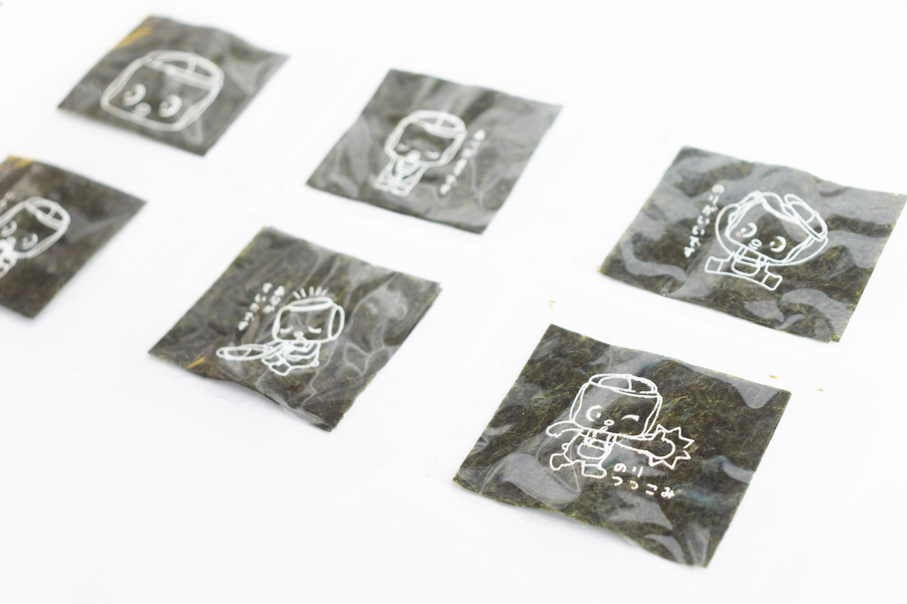
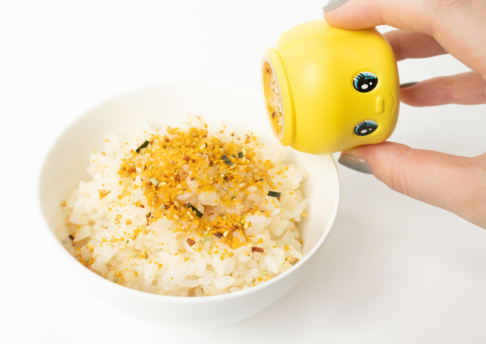

TODAY'S TOPIC
フエキのりを覚えていますか？
幼少期の図画工作で多くの方が使っていたであろう「フエキのり」。そんなおなじみの文具がバラエティ豊かな他のアイテムへ変身しているようです。

img source -(https://www.haconiwa-mag.com/design/2021/04/fuekinori/)
私の、のり遍歴を現在から遡ると、テープのり→スティックのり→液状のり→フエキのり、の順番です。当時は顔のついた可愛いフエキどうぶつのりではなくて、下の画像のようなシンプルなフエキのりを私は使っていました。1975年からどうぶつフエキのりも売られているようですが、 個人的にはあまり見かけた覚えがありません。黄色い寸胴より、顔があった方がやっぱり可愛いですね。

img source -(https://lohaco.jp/product/H220511/)
そんなどうぶつフエキのりは、そのケースの形状を活かしながら様々なアイテムに変身しているようです。綿棒、のり(海苔)、ふりかけ、、などなど。





img source -(https://www.haconiwa-mag.com/design/2021/04/fuekinori/)
気になったのはふりかけケースです。他のアイテムと同様に可愛いらしさに惹かれつつ、大きさがちょうどよく実用的そうだと思いました笑